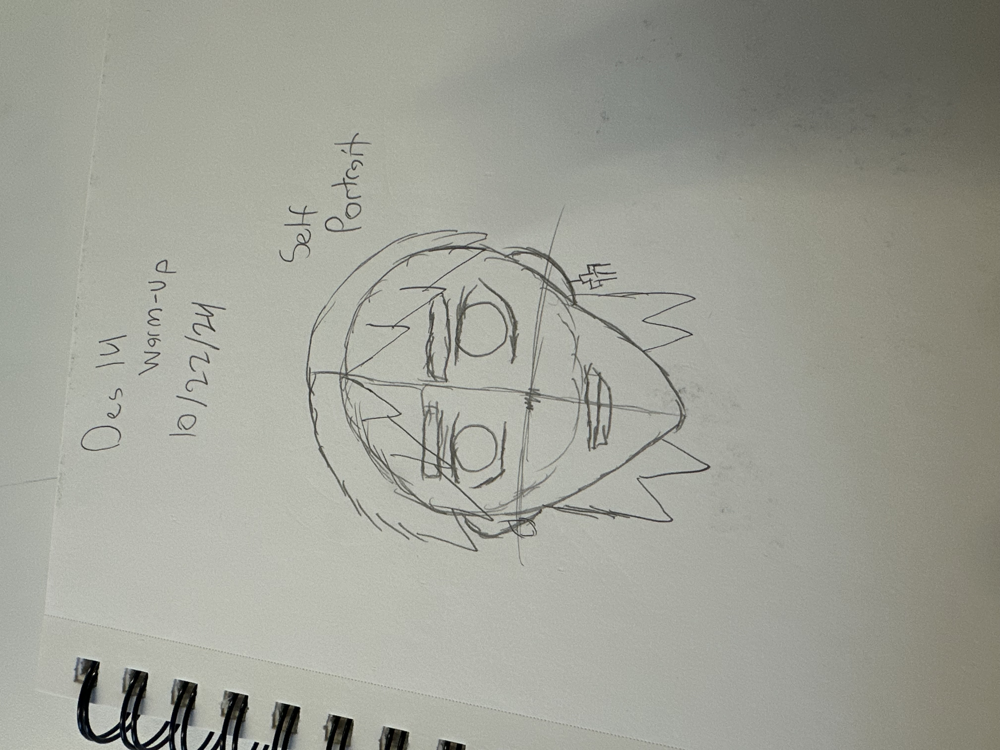

This image is particularly interesting to me because it represents more than simply a fragrance bottle; it reflects personal memory, identity, and daily routine. While viewers may see a clean product photograph of a Louis Vuitton cologne, what is not immediately visible is the emotional connection tied to the scent. This fragrance is associated with specific moments such as important events, outings, or milestones, making it a sensory reminder of experiences that extend beyond the visual frame. The minimal background and natural lighting emphasize the transparency of the glass and the reflective liquid, allowing the object to feel both personal and refined.
This image relates directly to my archive because my collection documents personal lifestyle objects that represent self-expression, confidence, and growth. Each item in the archive contributes to a broader story about how style, routine, and personal care practices help shape identity. Collectively, these images show how everyday objects can carry symbolic meaning and reflect personality over time. To make the image more compelling, I could experiment with more dramatic lighting, textured backgrounds, or environmental placement—such as photographing the bottle on a dresser or near clothing items—to introduce narrative context and create a richer visual story while maintaining the clean aesthetic of the collection.
Ava, your image presents an indoor climbing wall filled with colorful holds, geometric climbing volumes, and route indicators. The photograph documents a recreational environment, yet it also functions as an abstract visual composition because the repeated shapes, angles, and textures create a strong sense of rhythm and movement. The most interesting aspect of the image is the interaction between color and texture. The bright climbing holds contrast with the matte brown wall surface, creating visual emphasis while the repeated bolt holes introduce pattern and structure that guide the viewer’s eye across the frame.
The most obvious element of the photograph is the functional purpose of the wall as a climbing space, while the most mysterious element is the absence of a climber. Without a human figure, the holds appear sculptural, transforming the environment into a visual landscape that invites interpretation. To make the image more expressive and visually rich, you might experiment with perspective by photographing from a low upward angle to exaggerate scale or by capturing a climber’s hand interacting with a hold to introduce narrative tension. Additionally, stronger directional lighting or tighter cropping could create dramatic shadows and increase the sense of depth, making the image feel less documentary and more poetic and intriguing.

10 Intriguing Photographs to Teach Close Reading and Visual Thinking Skills
In the article “10 Intriguing Photographs to Teach Close Reading and Visual Thinking Skills,” Michael Gonchar explains how photographs can be powerful tools for building observation, interpretation, and critical-thinking skills. Instead of just reading text, students learn how to carefully examine images and ask questions such as what is happening, what evidence supports their interpretation, and what additional details they can discover. Moreover, this process encourages viewers to slow down and truly analyze what they see rather than making quick assumptions.
In addition, the article demonstrates that visual literacy is just as important as reading literacy because images communicate complex stories, emotions, and social contexts that words alone may not fully capture. When students take time to observe small visual elements, they begin to recognize patterns, symbolism, and deeper meanings that strengthen their analytical thinking. Hence, studying photographs becomes a meaningful method for improving both comprehension and reasoning skills across different academic subjects.
With this in mind, the use of intriguing photographs in the classroom not only improves observation skills but also promotes curiosity and discussion among learners. Students are encouraged to share interpretations, support their ideas with evidence, and consider multiple perspectives, which builds stronger communication and critical-thinking abilities. Overall, the article highlights how visual analysis activities can transform the learning process by teaching students to look carefully, think deeply, and interpret information more thoughtfully.
Best Practices for Modals / Overlays / Dialog Windows
From the reading, I can see that modals, overlays, and dialog windows should be designed in a way that helps users stay focused without feeling confused or trapped. The article explains that every modal should have a clear purpose and a simple way to close it, such as a visible “X” button, a cancel option, or clicking outside the window. In addition, modals should include a descriptive title and clear action buttons so users understand what they are supposed to do. The background of the page should be dimmed to create visual hierarchy and guide attention to the modal content. With this in mind, modals should usually appear only after a user takes an action, rather than popping up randomly and interrupting their experience. Moreover, designers must think about accessibility by making sure keyboard users and screen readers can interact with the modal easily. Overall, the reading shows that when modals are used thoughtfully and not too often, they can improve usability and help users complete important tasks without frustration.
The article explains that good form design is important because it makes things easier and less frustrating for users. First, forms should be simple and only ask for necessary information so people don’t feel overwhelmed. Moreover, using a single-column layout helps users move through the form more smoothly without confusion. With this in mind, if a form is long, breaking it into steps and showing progress can make it feel more manageable. In addition, clear labels and instructions help users understand exactly what is being asked of them. Hence, when forms are designed with the user in mind, they become faster, easier, and more enjoyable to complete.